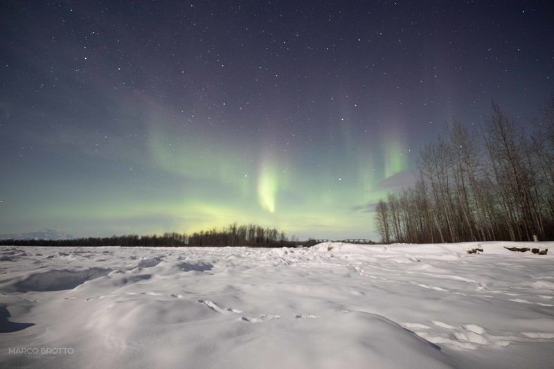

Data • 15/02/2023

A aurora boreal, um fenômeno celestial fascinante, continua a encantar observadores do céu noturno no Ártico. Essas deslumbrantes luzes coloridas, que dançam no horizonte, têm uma explicação científica que amplia a nossa compreensão do cosmos.
A aurora boreal ocorre quando partículas carregadas do sol, principalmente elétrons e prótons, colidem com átomos na atmosfera da Terra. Esses encontros energéticos liberam luzes vibrantes, criando um espetáculo cósmico único. A intensidade das cores varia devido aos diferentes tipos de átomos presentes na atmosfera.
Por exemplo, as auroras verdes são geralmente causadas pela interação do oxigênio com as partículas solares, enquanto as auroras vermelhas podem ser atribuídas à interação com átomos de nitrogênio em altitudes mais elevadas.
Cientificamente, a aurora boreal é um resultado do fenômeno conhecido como "tempestade solar". Quando o sol emite partículas carregadas em direção à Terra, elas interagem com o campo magnético do planeta, direcionando-as para as regiões polares. Esse contato magnético desencadeia a exibição magnífica das luzes do norte.
Durante as épocas mais ativas do ciclo solar, a frequência e a intensidade das auroras aumentam, proporcionando espetáculos ainda mais deslumbrantes. Viajar para as regiões árticas durante esses períodos oferece uma oportunidade única para testemunhar esse espetáculo cósmico em toda a sua glória.
Em conclusão, a aurora boreal não é apenas um fenômeno visualmente espetacular, mas também uma manifestação magnífica da interação entre o sol, a Terra e seu campo magnético. Ao compreender a ciência por trás desse espetáculo cósmico, podemos apreciar ainda mais a beleza e a complexidade do nosso universo.
Um dos registros mais notáveis de auroras boreais ocorreu em [inserir ano e local]. Durante esse evento, a intensidade das luzes do norte atingiu níveis espetaculares, iluminando o céu noturno e atraindo a atenção de cientistas e entusiastas da astronomia de todo o mundo. Estudos subsequentes desse fenômeno contribuíram significativamente para nossa compreensão da dinâmica atmosférica e das interações sol-terra.